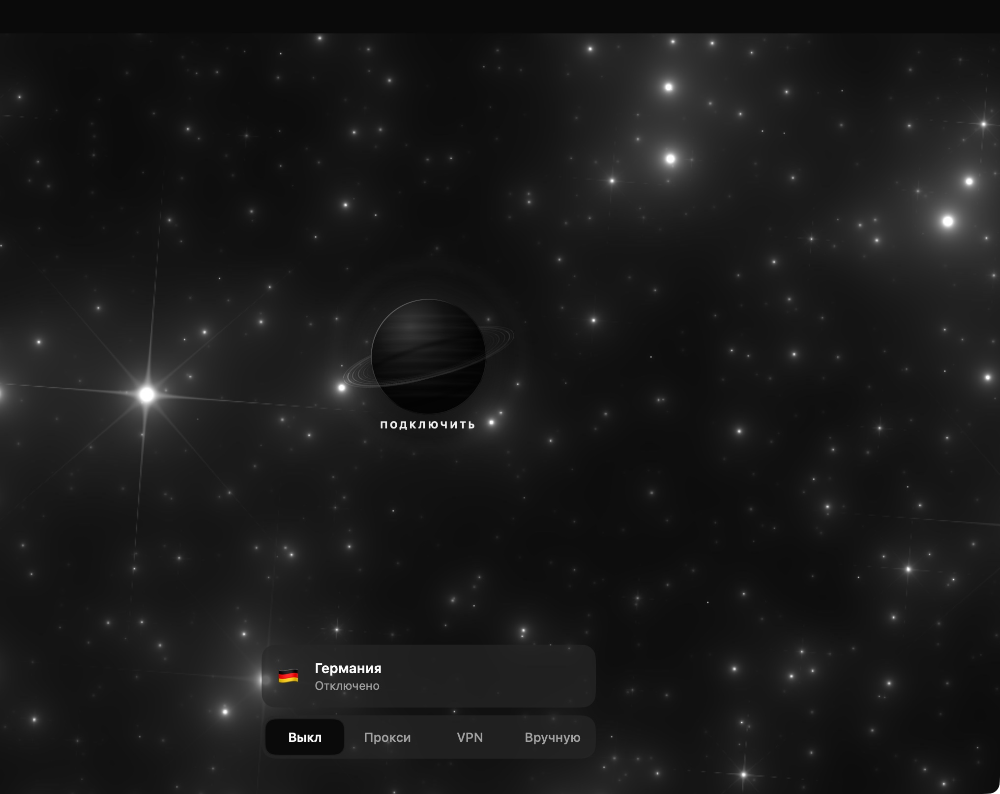

Пять протоколов
VLESS с Reality и XHTTP, Trojan, Hysteria 2, Shadowsocks и VMess. Конфигурации импортируются из файла или ссылки.
VPN для macOS
Centella — клиент для VLESS, Trojan, Hysteria 2, Shadowsocks и VMess на sing-box и Xray. Без аккаунта, подписки и телеметрии.

Один процесс, три режима работы и всё, что нужно для повседневного соединения.
VLESS с Reality и XHTTP, Trojan, Hysteria 2, Shadowsocks и VMess. Конфигурации импортируются из файла или ссылки.
TUN забирает весь трафик Mac, включая UDP и DNS. Системный прокси подходит программам, которые читают настройки macOS. Третий режим — локальный прокси с паролем.
Блокирует сеть при обрыве соединения или постоянно, пока VPN не подключён. Правила снимаются при выходе из приложения.
Серверы обновляются по ссылке подписки, задержка измеряется для каждого узла. Автовыбор берёт лучший.
Состояние и переключение без открытия окна. Настройки — ⌘, в любом режиме.
Профили, подписки и журнал остаются на Mac. Приложение не отправляет статистику и не требует учётной записи.
Займёт минуту. Приложение не подписано сертификатом Apple, поэтому первый запуск требует подтверждения.
Скопируйте команду в Терминал (Программы → Утилиты → Терминал) и запустите Centella снова:
xattr -dr com.apple.quarantine /Applications/Centella.app
Команда снимает с приложения отметку о загрузке из интернета, ничего не удаляя. Нужна один раз. Вместо Терминала можно открыть «Системные настройки» → «Конфиденциальность и безопасность»: кнопка «Всё равно открыть» есть не во всех версиях macOS.